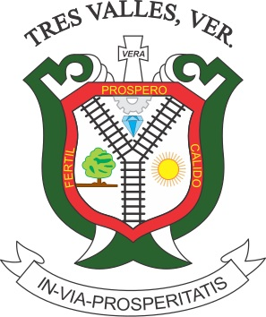
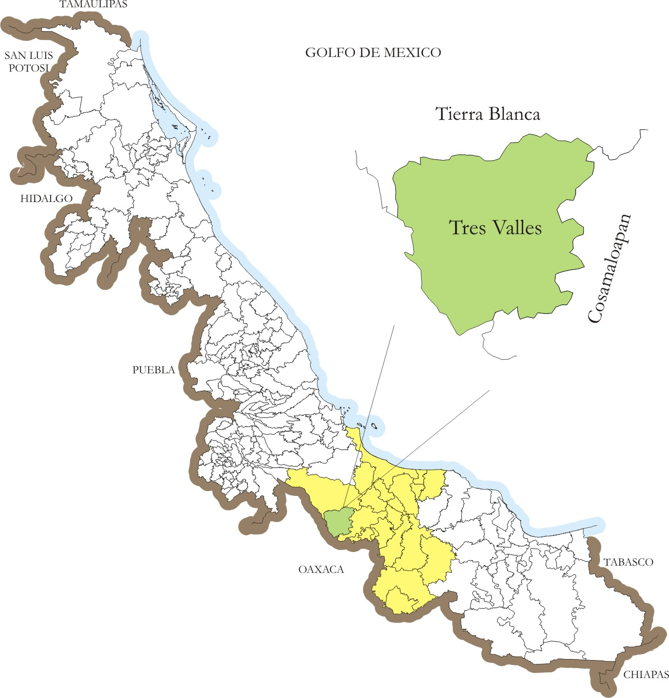
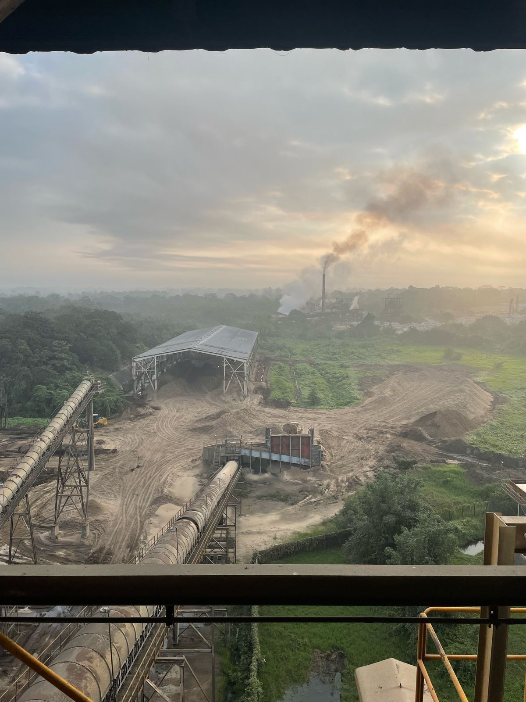
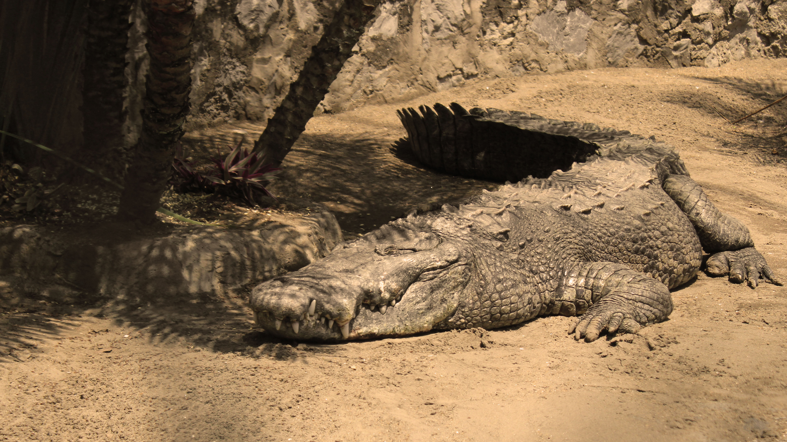
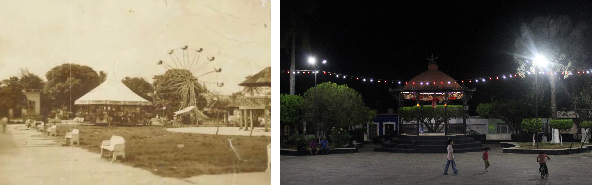

El municipio de Tres Valles es un municipio del estado mexicano de Veracruz, declarado municipio libre por decreto el 25 de noviembre de 1988. Se encuentra ubicado en la baja cuenca del Papaloapan, colinda con el estado de Oaxaca y los municipios de Tierra Blanca y Cosamaloapan.
El escudo de tres valles se divide con las vías del ferrocarril en tres pequeños símbolos, uno representando a la prosperidad y riquezas del municipio, otro representando la fertilidad de las tierras de Tres Valles, y finalmente representando que es un municipio cálido.

En este pequeño portal veremos un recuento de la historia de nuestro querido Tres Valles.

El 21 de noviembre de 1907 se considera la fecha de fundación de la ciudad de Tres Valles.
En 1916 se siembra la primera caña de azúcar, Tres Valles creció principalmente gracias a su ubicación estratégica y a la fertilidad de sus tierras. La región se convirtió en un importante centro de cultivo de caña de azúcar, maíz, arroz y otros productos tropicales.

El origen de Tres Valles se da en plena época del gobierno de Porfirio Díaz, llamada porfiriato, quien trató de establecer una gran red de ferrocarriles que comunicara la mayor parte de la república para con ello impulsar el desarrollo económico. En la cuenca del Papaloapan, después de siglos de estar las tierras repartidas en grandes haciendas dedicadas básicamente a la cría de ganado vacuno, se dividieron, surgiendo nuevas haciendas más pequeñas. Se veía a la zona con grandes oportunidades de desarrollo.

El origen histórico del nombre Tres Valles es incierto, generando dudas; la versión generalmente aceptada y más conocida es la que dice que dicho nombre se debió a que era paso obligado a tres valles que hay en la región: Valle Nacional, al Valle de Tesechoacán (actual José Azueta) y el de Playa Vicente, aproximadamente entre 1900 y 1910.
Otra versión cuenta que de la palabra “VÍAS” se deriva la palabra Valles, se trata de una deformación de como pronunciaban los estadounidenses a las vías o en específico al referirse a este lugar, del que salían tres vías. Vías al pronunciarlo un anglófono suena a algo parecido a “VALLES” a los oidos de un hispanoparlante.
El Parque Miguel Hidalgo, solía ser una laguna con lagartos y otras especies marinas, fue uno de los primeros proyectos colectivos que se lograron concretar en nuestra ciudad, donde ciudadanos de Tres Valles cooperaban con carretas llenas de tierra que excavaban de distintos puntos de Tres Valles, para rellenar dicha laguna que posteriormente se convirtió en un punto donde familias solían recrearse, hoy en día nuestro parque ha sido remodelado en diversas ocasiones, sigue siendo el símbolo que define épocas, fue, es y seguirá siendo punto de reunión de los ciudadanos y testigo del pasar de nuestra historia.


Fuentes de información.
Wikipedia:Municipio de Tres Valles